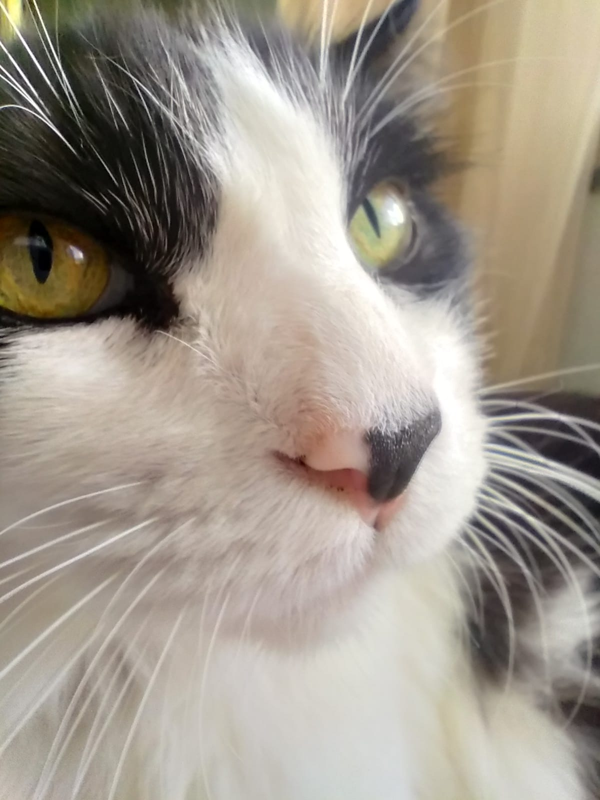
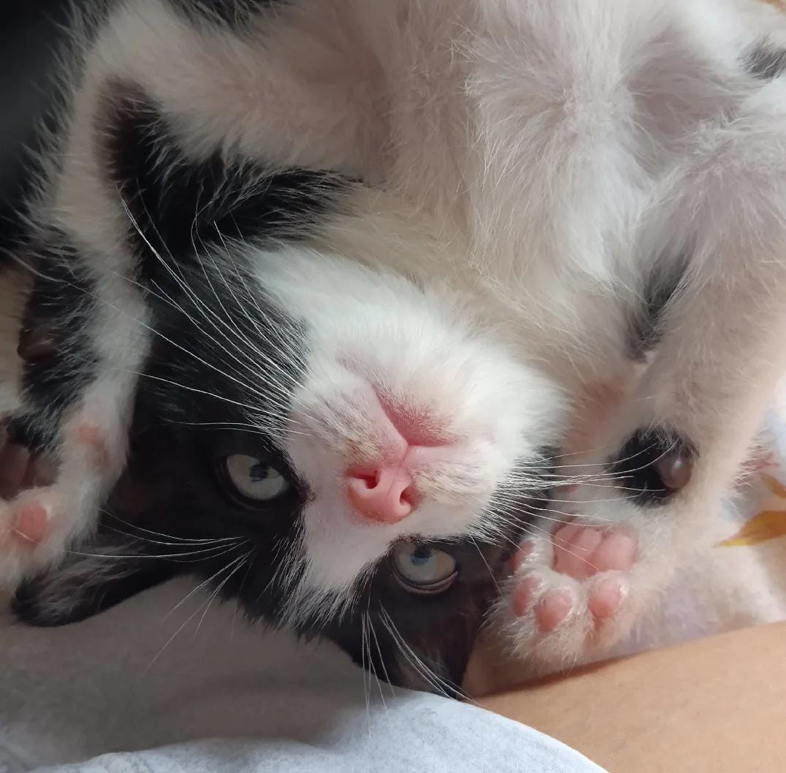
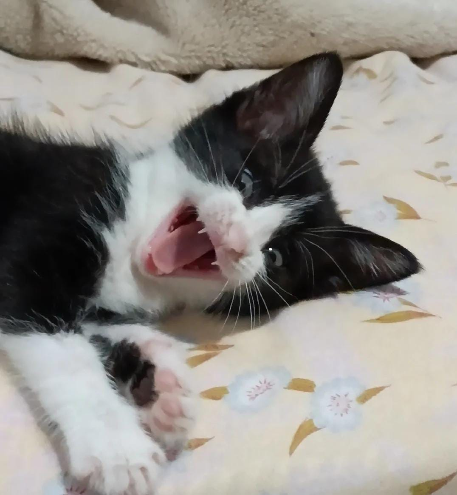

Fatos sobre gatos
Coisas que gatos amam:
- Catnip (Erva de Gato)
- Amassar "Pãozinho"
- Cheirar azeitona
Top 3 coisas que gatos odeiam:
- Ir no veterinário
- Fogos de Artifícios
- Invasores
Bicudo é meu gato mais velho, ele tem 12 anos,ama tomar sol e comer sachê.
Jimin é meu gatinho de 3 meses, ama sachê e brincar com tudo!
Clique para ver mais fotos de gatos 🥰
Responda essa pesquisa nos ajude a entender mais sobre esses bichinhos.
PS: Se você quiser, pode anexar uma foto do seu gato para fazer parte da nossa galeria.
Quero participar da pesquisa